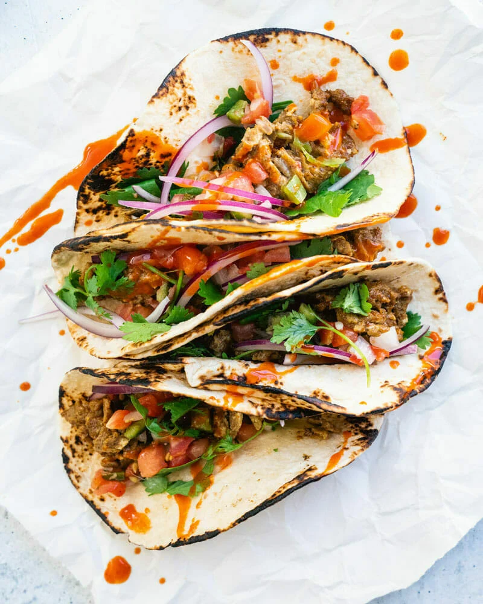

Tacos

peep those tacos boii
Hello, hungry eater in need of a quick and easy dinner idea! Over here, we’re obsessed with finding meals that are three things:
fast, simple, and delicious. Here’s a question: Is a 5-minute dinner recipe possible? Well, we think we’ve nailed it with this recipe.
Try these 5 minute tacos, filled with a hearty filling that comes together in minutes. WOW. You’ve got to try these.
Ingredients
- 4 eggs
- 1/2 tablespoon chili powder
- 1/2 tablespoon garlic powder
- 1/2 tablespoon cumin
- 1/4 teaspoon kosher salt
- 1/2 tablespoon olive oil
- 4 taco sized tortillas
- pico de gallo
- 1 handful thinly sliced red onion
- torn cilantro leaves
- hotsauce
Steps
- in a medium bow, whisk together the 4 eggs
- add the chili powder,garlic powder,cumin and kosher salt
- whisk until combined
- heat olive oil in skillet, add eggs and cook over medium heat
- warm and char tortillas
- top with pico de gallo,onions, cilantro and hot sauce